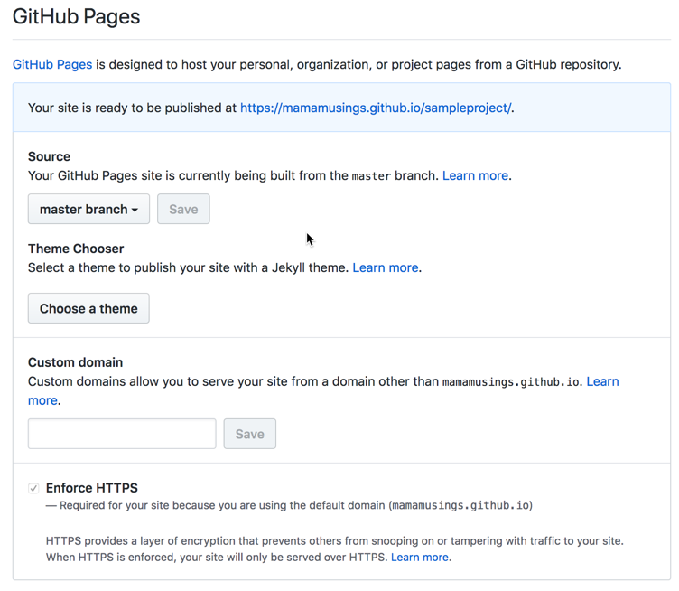

GitHub Pages Exercise
(Week 2, Thursday 9/6)
As discussed in lecture, GitHub provides the ability to publish a basic website from a repository. In this exercise, you’ll learn how to create a website associated with your GitHub username, as well as how to create one associated with a specific project/repository.
Due: Sunday, September 9 at noon
Part 1: Creating a Personal GitHub Site
(If you already have a personal github site, you can skip this.)
You can create a site for a user or organization by creating a new repository in that account with the name username.github.io; this will automatically be used to serve web pages from that address.
You can see an example at https://github.com/mamamusings/mamamusings.github.io (my personal GitHub pages repo) and http://mamamusings.github.io (the resulting website).
In your GitHub account, create a public repository called username.github.io

Clone the new repository to your computer using VS Code, and create an index.html file that includes your name and an image. Use CSS to make it look moderately professional. Commit and push your files to GitHub, and use a web browser to go to username.github.io. your files should show up there!
Part 2: Creating a Project-Based GitHub Site
You’ll be publishing all of your work for this class using GitHub pages, and creating a "landing page" so that it's easy for the professor and TA to quickly access your exercises and projects. Rather than placing this page in your personal directory, you’re going to create a new repository specifically for work done in this class.
Create a new repository called igme230 in your account. Clone it to your computer, create a simple index.html file in it, and push that file to GitHub. Unlike your personal GitHub pages site, this will not be immediately available. You'll need to explicitly set this repo up to publish with GitHub Pages.
On the GitHub site, go to your igme230 repo, select “Settings”, and scroll down to the GitHub Pages settings. Choose master branch as your source, and save. (Do not try to install a Theme; these do not use standard HTML, but instead use a templating language based on Ruby; if you want to explore using Jekyll Themese for GitHub Pages, you should create a separate repo for that.
Your class repository page should now be visible at username.github.io/igme230